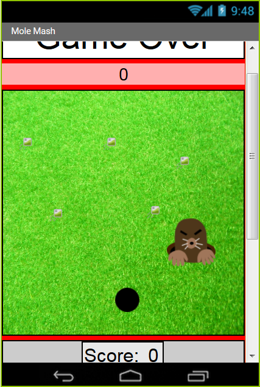
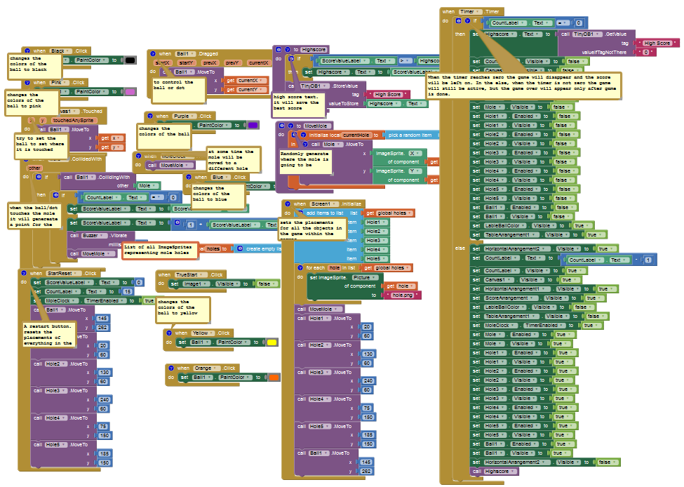
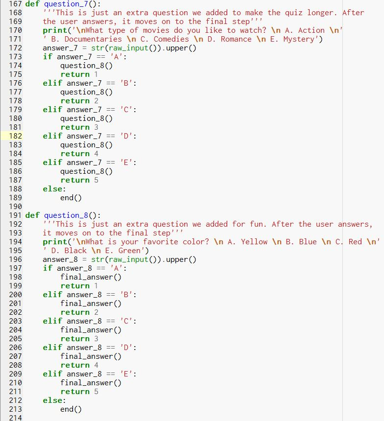
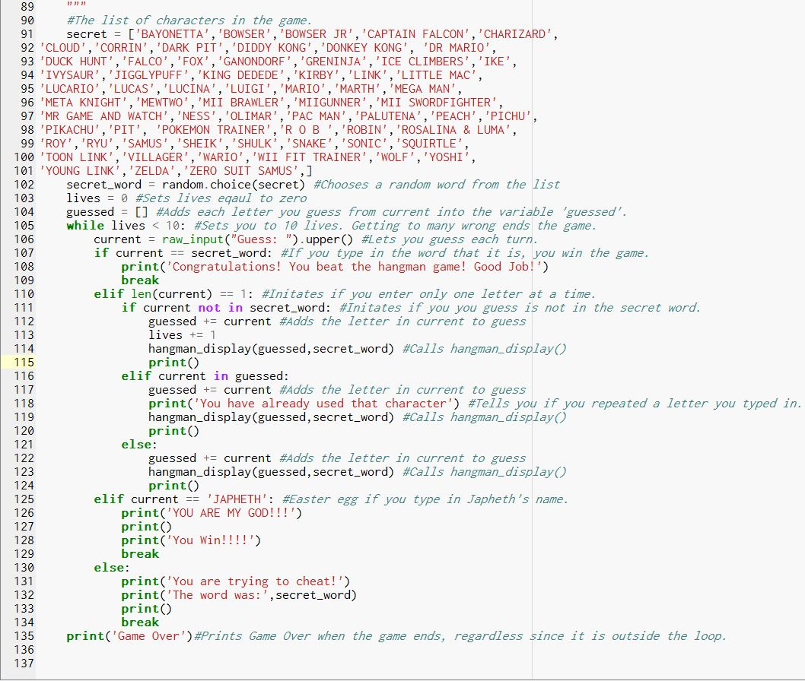
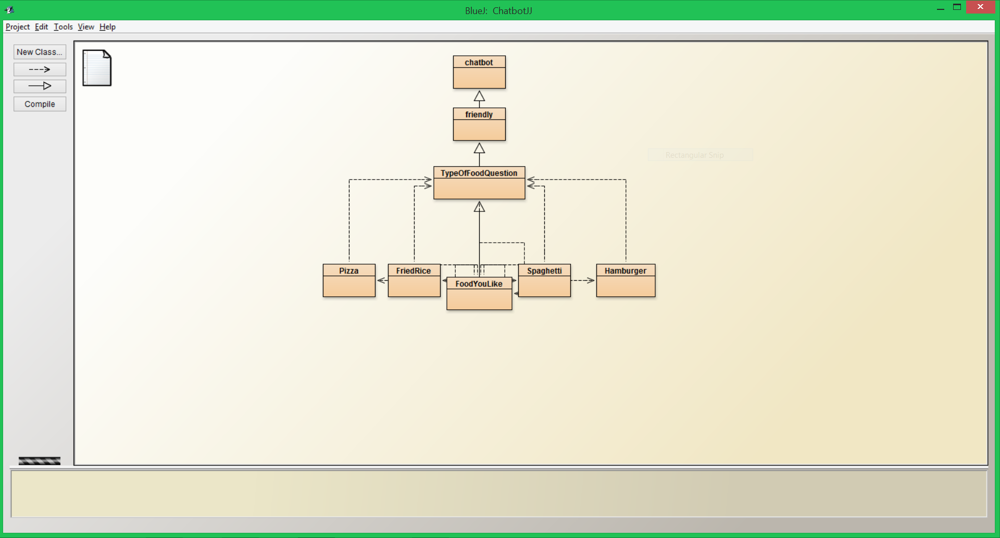
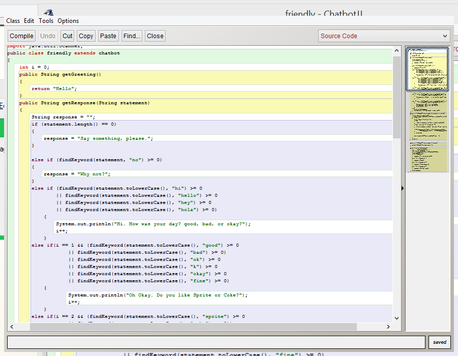
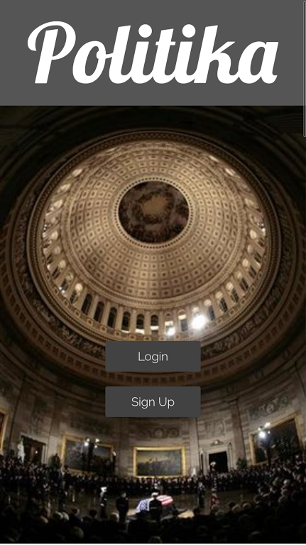
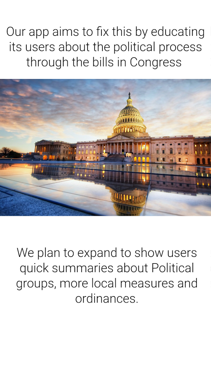
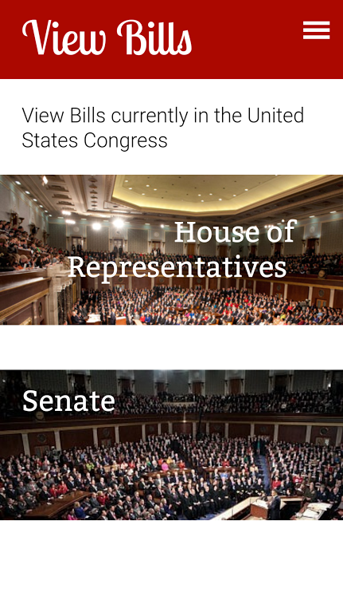
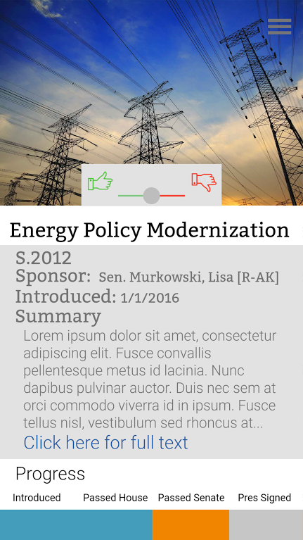

Dublin High School Computer Science Education
9/21/15 - 10/30/15
This was my first first Scratch programmed project. This story was created mainly by my friend and we wanted to create a story based of her favorite creature and animals.
include images that highlight your work and links to full project documentation and blank scoring rubric if available
To play the game: Click Here
Partner: Lilly Pena
Dublin High School Computer Science Education
12/21/15 - 1/8/16
My objective for this project was to create a game like Whack -A-Mole for carrier devices.My team decided to make it have the feeling of playing the game Fuit Ninja on the game Whack-A-Mole. This would lead to our title Slice-A-Mole. This game was suppose to be made for children. There were many challenges for this game. It was difficult to minimizes the amount of code, while doing the commands that we needed. Our teamwork for this game was good, becuase my partner was one of my friends.
This the link to full project documentation and process of our work: Click Here
 Partner: Matthew Ng
Dublin High School Computer Science Education
03/11/2016 - 02/29/2016
Text Adventure was a Python coded game. We made our project based around a personality quiz. The quiz asks the the user and their choice to complete an action. Through this project, I learned to use branching and making it more effiecent.
To see our project log: Click Here
To see code: Click Here

Partner: Madison
Dublin High School Computer Science Education
03/25/2016 - 03/21/2016
The Hangman project was coded in Python. The goals for the project was to allow the user to guess letters until the work or phrase was correct. The project references the game, Super Smash Bros. . The program list consists of all the character of the game and it is randomily selected to let the user guess the character. During the project, I learned to use while and for loops properly and how they can funciton as a whole.
To see code: Click Here

Partner: Noah Fourby
Dublin High School Computer Science Education
5/9/16 - 5/12/16
In this project, the teacher had us take images and moditify the backgrounds and image within the a couple image. With my partner, we had combined images together and motified the image.
image
Partner: Uday Karla
Dublin High School Computer Science Education
5/13/16 - 6/1/16
This project was made for my school's entrepeneur project. My partner and I had to solve a world crisis. The problem we tried to solve was, "How do you solve the issue of tangled cords while savin effecient space?"
To see presentation: Go here
Partner: Adrian Chan
Dublin High School AP Computer Science
10/5/16 - 12/5/16
The Suzie chatbot was made in my AP Computer Science class. The goals of this project was to create a chatbot that communicates with a few friendly question and guide you the user to how to make the food they want to make. If the user were to change the type of food they want to make, they would have to start over. During the project, I learned that it in java, extending classes work like a food pyramid.
 
If you want to see the code: Go Here
Partner: Jenny Li
Dublin High School AP Computer Science
Politika was a project made in Proto.io. My fellow classmates and I knew that the presidential election of 2017 had just ended. We realized that that many of the voters were not completely voting. We thought that either they were uninformed around the people or the bills they were voting for. The Politika app was to designed to allow the fellow community to understand what is happening in our government. The app allows us to see The process and the name of the bill and allow the people to vote if they want to see any updates of this bill.
   
Partner: Yashila Bordag, Cassandra M., Jenny Li